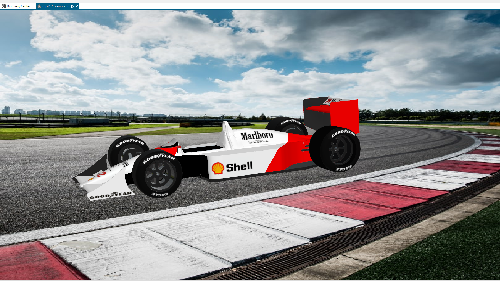
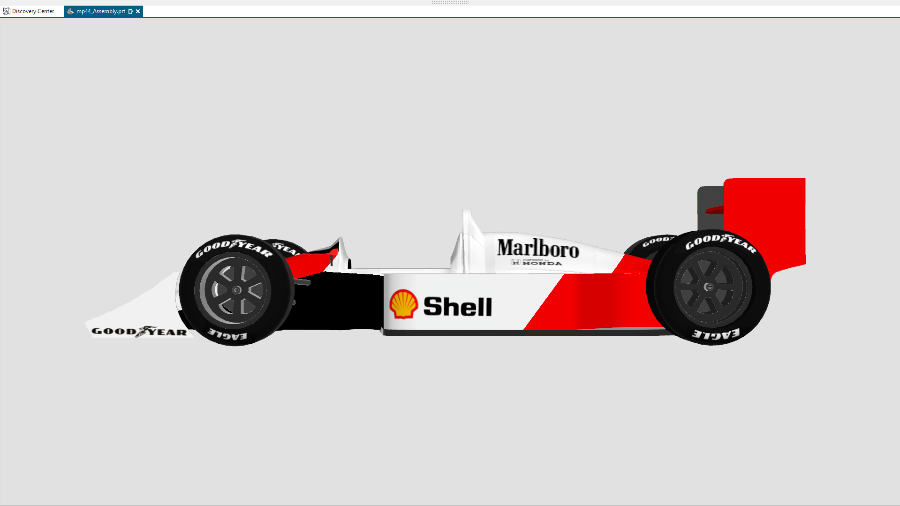
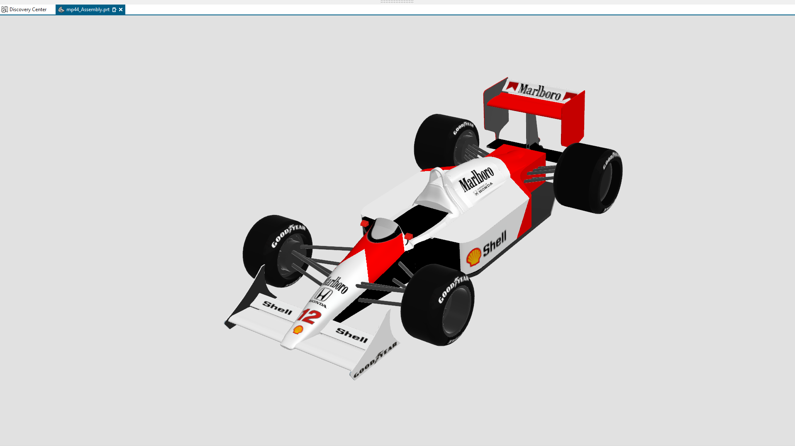
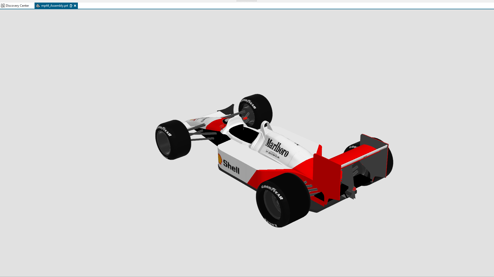
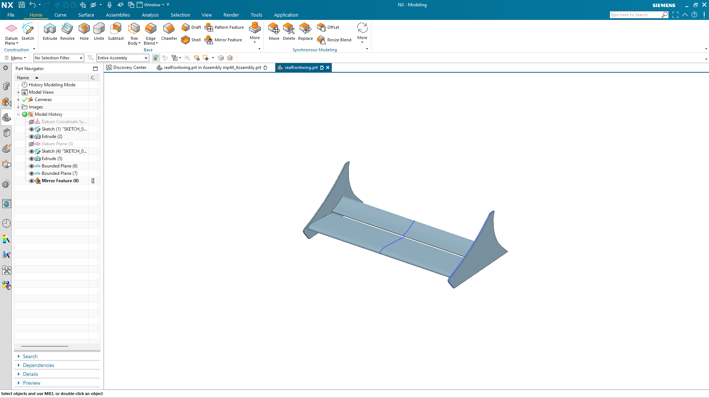
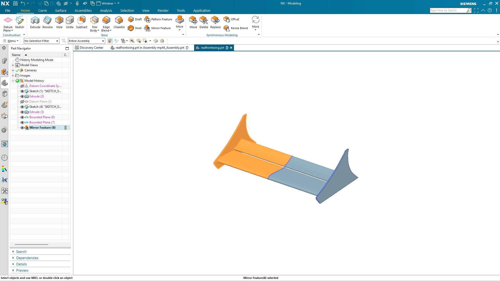

Aerospace engineering portfolio
Aerospace design,
built with intent.
I’m Atharv Raghav, an aerospace engineering student at UIUC turning technical ideas into modeled, analyzed, and buildable systems.

About me
Engineering flight through design, analysis, and hands-on work.
I’m an Aerospace Engineering student at the University of Illinois Urbana-Champaign, interested in aerodynamics, autonomous flight, structures, and the tools that connect an engineering idea to a physical system.
My work spans parametric CAD, mechanical assemblies, UAV development, composite structures, and Python-based engineering analysis. I founded UAV@Illinois and contribute to hands-on aerospace projects through the Illinois Space Society and other student engineering teams.
I’m also developing AeroDesignX, an aircraft-design platform combining mission evaluation, optimization, automated CAD generation, and aerodynamic analysis.
Selected work · 01
McLaren MP4/4
A detailed Siemens NX assembly study built to develop complex surface modeling, component organization, and assembly discipline.
- Platform
- Siemens NX
- Project type
- CAD assembly
- Focus
- Surfaces + systems
- Status
- Complete





Modeling evidence
Beyond the render.
The portfolio shows both the finished object and the construction behind it. The NX Part Navigator records a surface-led front-wing workflow using sketches, extrusions, bounded planes, and mirrored geometry.
- 01 Reference geometry
- 02 Surface construction
- 03 Assembly integration